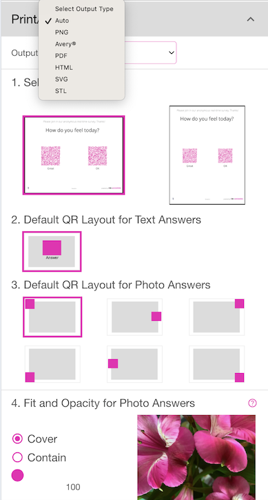
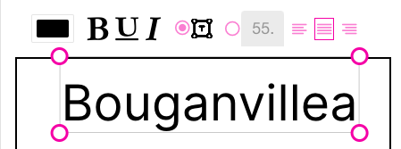
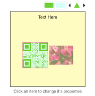
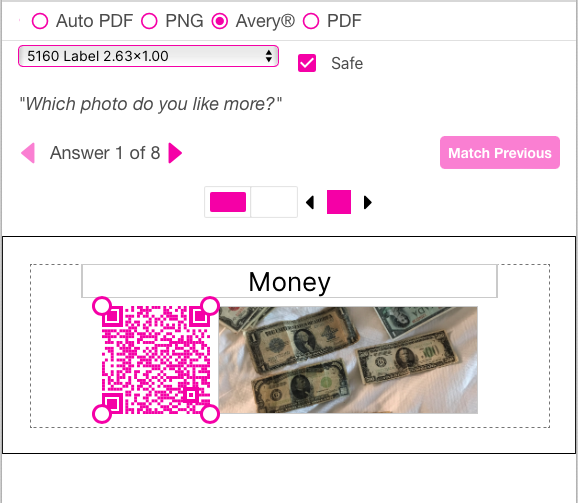

Quick Links
Print/Download
This section allows you to choose whether to output to an Auto generated PDF(s) for your Question(s) and Answers or to output PNG files (individual images per file) or to Avery© labels, or to manually layout a PDF . You are allowed to print your contest so that you may test the voting. Until you launch your contest by paying for it, the results will only show the last vote scanned. So, if you have a question with 3 answers and you print a PDF out, you can test your campaign by scanning them one at a time and seeing the results. Each time you scan (no matter who scans), the prior result will be removed. You can think of this as a ‘draft’ mode where you are just testing your contest, but not really aggregating results. After testing and your’re ready to launch/publish your contest, go to Pay and Launch

Auto PDF
Auto PDF - this will output one PDF per Question. The Answers will be arranged automatically on the page. You should not put more than 6 answers on a Question if you want them to layout correctly on a single PDF. You may choose Lanscape (the default) or Portrait orientation for the PDF.
The other settings are explained in the Configure Options section above. Setting them here will override the Configure Options values.
If you have Adobe Acrobat or the new free Microsoft Edge PDF Editor, you may edit the generated PDF and place things wherever you like. Just be sure to not modify the QR codes in the document. Also, when you print the PDF make sure you check the Actual Size radio button on your print dialog. The PDFs are generated with precise measurements and should not be scaled.
PNG
PNG - Selecting this option will allow you to control every visual aspect of each of your questions and answers and output them to multiple PNG files. Each Question will be in a separate PNG and each answer will be in their own PNG file. The software will also generate a ‘directory’ so that you know which Questions and Answers go together. The program will automatically layout each answer to make them look nicely when output. However, you may adjust any aspect of each PNG by following the below procedures.
You may change each property for every Answer, or you can modify the 1st Answer to be the layout you would like to use for all of the Answers and choose - you will then be prompted to select whethe ry ou want to apply the layout to All Questions (this Location), All Answers (this Question) or Cancel.
- for QR-Contest, there is only 1 Location per Question. However, your contest may have multiple Questions. Pressing this button will apply the current layout choices to all Questions and their Answers.
- Pressing this button will apply the current layout choices to all Answers for this Question. If you have multiple Questions, pressing this will not affect the other Questions. Use the arrow buttons at the top to change Questions and Answers.
In addition, if you are on an Answer past the first one, you can use the button to match the layout of the Answer you are on to the previous Answer.
In addition to colors, fonts, etc. you may also manually locate any of the object in the preview area. Select an object (text, QR code, photo) and you will see gripper handles on the 4 corners of the object (the image above has them around the QR code). You may change the size of the object by dragging the gripper handles, or you may click and drag the middle of the object to relocate it. The stacking order of the objects is: QR Code on top, then the Text answer (if any), then the Photo (if any), then the background.
Changing the size of the Text box will increase or decrease the font size to fit your Answer into the box if the auto-scale text icon is chosen (the default).
You may traverse through the Question(s) and Answers using the left and right arrows.
When you are done laying out the PNG files, you should press . The PNG files will be generated see here. If you do not traverse through all the questions or answers, the ones you have not visited will use the auto-layout algorithm.
You may choose the resulting size of the PNG files by changing the Size (width x height). Or, you may choose a pre-defined size (like for your Canon Ivy Printer, so you can print stickers!). We update this list often. If you are looking to output Avery® labels, you should use the Avery® radio button on the Print/Download section. You may also change the QR Code colors, Text style and photo transparency (if you have photo answers).
Click on an object in the preview to set the properties. For example, the QR code is selected by default when you first get to this screen. You can change the foreground and background colors of the QR code as well as the shape of the little internal ‘rectangles’.
QR Code
To change the colors, click on the left color box for foreground or the right color box for background. Then, select a color from the color picker. You’ll see the preview update with your changes. To make the color picker go away, click outside of it.
To change the shape of the internal ‘rectangles’, use the left and right arrow buttons. You can choose circle, triangle, hexagon, star, etc.
Text
Click on the Text Here (whatever your text answer is) at the top of the preview. That will display a row of attributes you can change for the text. You may change the font color, bold, underline and italic. If the auto-scale text icon is chosen, the text will scale to fit/fill the text box area. If you select the radio button to manually enter the font size and justification, then the auto-scale will be disabled. You may enter decimal numbers for the font, but be careful, as we have not put any limits on the size at this point. If you type 300, you’re going to get a big chunk of text that will overflow the box. If your answer does not have text, it will not appear in the layout.

Photo
Click on the picture of your answer (if you have a photo) and you may change the opacity of the image. The default is 100 - meaning completely opaque so nothing under the photo shows through. You can change the opacity so that the image background (see below) shows through or blends with the photo. The below sample shows the opacity at 50% on a white background, so it make the photo ‘lighter’. If your answer does not have a photo, it will not appear in the layout.
The PNG layout also allows you to modify the Photo to be Contain or Cover. See the section Question Page Appearance for a description. Click on the Photo and above the Opacity setting will be a checkbox. The default setting for PNG is to use Cover (the far left radio button) - which means the image will fill the layout box. If you choose the right radio button, the image will be set to be ‘Contained’ in the result rectangle. You may play with these to see what they do. If you choose the check box on the far right, that means to scale the photo to be the same aspect ratio as the source and to restrict its sizing to match that aspect ratio. Unchecking the box will revert to Cover and Contain mode.
Background
Click on the empty space of the background and you may change the color. The default is white, so the color box above the preview is a little tricky to see. We’ve changed it to light yellow below:
Hot Tip
In the above image, you can see that the background of the QR code is white. We’ll change the background of the QR code to light blue with a 50% transparency (in the color picker). See below. The QR code background becomes light green because the light blue combined with the yellow of the overall Background will give you light green (blue + yellow = green).

Make PNGs
When you are finished altering the properties, click to generate your PNG files. You will get a message saying “Generating document(s)…”, then a short animation with a message that says “Open your document(s) here:”. See below:
You have 2 options here:
- Clicking the underlined text in the middle (a link to the .zip file) will download the resulting .zip file to your device.
- Clicking the far right icon will copy the URL for the .zip file to your copy/paste buffer.
If you get a message saying “No questions picked for this location” - you need to go back to the Questions and Answers section and make sure you have both at least one Question and at least one Answer per question.
To show the Print/Download options again, close, then open the Print/Download accordion.
PNG Zip Files
The .zip files generated when you create PNG images instead of PDF contains several files.
- directory.json - this file is a directory listing of all questions and answers in the .zip file. The json file (a file for a programmer) contains information about each question and answer - including the file names corresponding to each Question and Answer. If you open it in a text editor, it is readable. Here is an example of the PNG files generated from our Chicken example:
{ "location": "QR-vote location", "questions": [ { "id": "q_0", "question": "Which chicken do you like better?", "answers": [ { "id": "q_0_a_0", "text": "Lady Feathers", "image": "q_0_a_0.png", "size": { "width": 1024, "height": 1024 } }, { "id": "q_0_a_1", "text": "Yellow Fella", "image": "q_0_a_1.png", "size": { "width": 1024, "height": 1024 } }, { "id": "q_0_a_2", "text": "Joker", "image": "q_0_a_2.png", "size": { "width": 1024, "height": 1024 } } ], "image": "q_0.png" } ] }For QR-Contest, the “location” will always show up as “QR-vote location” (this has more meaning in QR-Answers). The Questions each have an index (the order they were entered in the Questions and Answers section). Each Answer also has an index. Both of these indeces start at 0 (sorry, a computer thing…). A Question is noted by the letter “q”; an Answers is noted by the letter “a”. Given the file names would be crazy long if we used the text of the question and answers, we thought it better to use numbers. So, if you want to find out what the 3rd answer in your first question looks like, you come up with it like this: Start with “q” (Question), then the index (0 since the first one starts at 0, not 1), add “a” for Answer, then the answer index, which for the 3rd one is 2; then put underscores (_) between each item. So, the file name of the first Question’s 3rd answer is: “q_0_a_2.png”. We also print out the Question text - the file name is constructed the same way: q_0.png is the first Question. The json file also has the size of each image.
You can read up on json (why would you?), but a quick summary is this: each ‘object’ starts and ends with matched curly brackets { }; each array (list) starts and ends with square brackets [ ]. We also output a tsv (tab separated value) file with the directory if that is easier for you to use in Excel or another spreadsheet.
- Question files (see above), for example q_0.png
- The Answer files for each question, for example q_0_a_0.png is the first answer to the first question
Avery ®
Avery® - Selecting this option will allow you to output your Answers to Avery® labels/documents. It works just like PNG above, but you are able to choose a different Avery label Template for each Question’s Answers. You may see more Avery Templates by going to Avery® Templates. For example, if you want to print your first Question’s Answers on Avery® Label 94100 - they will be 4” by 4” square labels. If you choose, Avery® 5160, you will get a 2.63” by 1” label for each Answer. We currently support US sizes (Letter), but will be adding A4 sizes shortly. The visual representation on the screen will match the aspect ratio of the chosen label. If you change the Template choice, you will be asked which Questions or Answers you would like to apply the change to. You may change for all Questions’ Answers in this Contest, or just this Question’s Answers. Typically, you probably will only have one Question in a Contest, but it is possible to have more than one, so modifying the Template will affect only the choice from the popup.
If you choose Avery as the output type, the Questions themselves will not be printed - for example “Which photo do you like more?” from below. You can print a PDF with the actual Question text, or just print it using Word or some other Text editor. We thought it would look funny to print the Question on a label, but if you think not, let us know… Also, like PDFs, make sure you choose Actual Size in your printer dialog so that the labels print precisely where they are supposed to.
You may control every visual aspect of each of your Answers by using the same process as described above in the PNG section.

The only other option not in the PNG layout described above is the Safe checkbox. If you select the checkbox, there will be a 1/8” dotted nmargin put around the actual label size so that you don’t overrun your label dimensions if the paper isn’t placed precisely in the printer. If you uncheck the Safe checkbox, you may move any text, photo or QR code to the absolute edge of the label.
Avery and all Avery brands, product names and codes are trademarks of Avery Products Corporation.
PDF - Selecting this option will allow you to output your Answers to a PDF, but you may manually layout each area of the PDF vs. the “Auto PDF” choice.
- Select the size dropdown and choose whether you want Landscape or Portrait (US Letter) orientation and how many Answers per page you would like to have. The Questions and Question Page Header are printed on each page if there are more answers than fit on a single page.

In Lanscape orientation, 1 per page will fill the entire page (except where the Question, Header and bottom logos print). The 2 per page will place them side by side; 3 per page will put them side by side in a single row; 4 per page will divide the page into 2 rows of 2; 5 per page will put 3 in the top row and 2 in the bottom (centered); 6 per page will make 2 rows of 3 across. In Portrait orientation, 1 per page will fill the page; 2 per page will put them in a column; 3 per page will be 1 column; 4 per page will split into 2 rows and columns; 5 per page will make 3 rows - 2 in the 1st 2 rows and 1 in the bottom row; 6 per page will have 3 rows of 2. Play with it, you’ll figure it out.
The area you are designing is one of the cells - all cells are the same size depending on what orientation and ‘per page’ you choose, the aspect ratio of the design surface will change and match the output aspect ratio. Keep in mind that for this style of layout, there are no margins between the cells - so you should leave some white space around the edges of the design surface or add a colored background.
You are able to layout each and every cell if you like, or layout the first one and choose . However, if you are doing a ‘serious’ research project, you may want to make sure all choices look the same so that the layout doesn’t dissuade or draw someone’s attention to something other than the Answer…
The customizations work like the PNG and Avery® label layouts described in detail above.